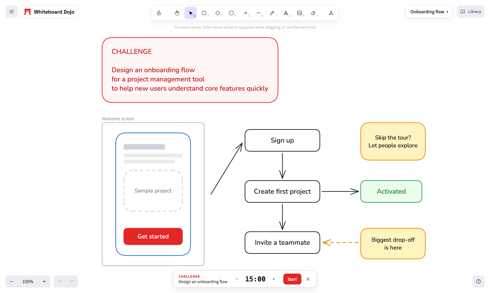

Free Miro Alternatives: Online Whiteboards With No Sign-Up or Board Limits
Last checked against each tool's pricing page in November 2026.
Miro is great until you open your fourth board. Its free plan keeps three boards editable, and anything older turns read-only until you upgrade or archive something. FigJam has a similar cap. If you only need a whiteboard now and then, or you'd rather not hand over an email address to sketch a flow, there are good free options that skip both problems.
This is an honest comparison. Whiteboard Dojo is our own tool and it's on the list, but it isn't the right pick for everyone, and we'll say where it falls short.
What actually matters in a free whiteboard
- Board limits. How many boards can you keep working on before you hit a paywall?
- Sign-up. Can you start drawing straight away, or do you need an account first?
- Where your boards live. On the company's servers, or only in your browser?
- Live collaboration. Can other people edit the same board with you in real time?
- Getting your work out. Can you export a clean image, or save a file you can open again later?
The quick comparison
| Tool | Free plan limits | Account | Where boards live | Live collaboration |
|---|---|---|---|---|
| Miro | 3 editable boards, low-resolution exports, 10 AI credits a month | Required | Miro's cloud | Yes |
| FigJam | 3 FigJam files in the team folder, unlimited drafts (drafts can only be shared view-only) | Required | Figma's cloud | Yes |
| Excalidraw | One canvas on excalidraw.com, 10 AI requests a day | Not needed | Your browser | Yes, through a share link |
| tldraw | No published limit | Optional | Your browser, or tldraw's cloud if you sign in | Yes |
| Whiteboard Dojo | No board limit | Not needed | Your browser | No |
Miro
Miro is the most complete of the lot: thousands of templates, integrations with almost everything, video calls and workshop tools. The free plan lets you create as many boards as you want, but only three stay editable. Exports on the free plan are low resolution, and private sharing and board history are paid features.
Pick it if your team already lives in Miro, or you run workshops with lots of people at once.
FigJam
FigJam is Figma's whiteboard, and it feels like Figma: polished, fast and friendly. On the free Starter plan you get three FigJam files in your team folder plus unlimited drafts, but drafts can only be shared with view access.
Pick it if you design in Figma and want your sketches next to your files.
Excalidraw
Excalidraw is open source and loved by developers for its hand-drawn look and keyboard-first feel. You can draw at excalidraw.com without an account, and the free version keeps your canvas in your browser. The catch is that you get one canvas at a time. More canvases, folders and cloud saving come with Excalidraw+ at $6 a month per user.
Pick it if you want quick diagrams, especially for technical docs, and one canvas at a time is enough.
tldraw
tldraw is a clean, fast whiteboard that also powers many other apps. Signing in is optional. If you stay signed out, your drawings are kept in your browser. If you sign in, your files sync to the cloud and show up across devices.
Pick it if you want a minimal whiteboard with easy sharing and don't mind making an account for sync.
Whiteboard Dojo
Whiteboard Dojo is built on Excalidraw's open-source editor, so the drawing tools will feel familiar if you've used it: connected arrows, frames, images, a shape library, dark mode and the same keyboard shortcuts. What we add is room to work. You can keep as many boards as you like, switch between them from a sidebar, and every change saves automatically. New boards start with a clean font and straight lines rather than the sketchy default.

There's no account and nothing is uploaded. Your boards stay in your browser, which is great for privacy, but it also means a board you make on your laptop won't appear on your phone unless you move the file over yourself. There's no live collaboration either, so you can't edit a board with a teammate at the same time. To share, you send an image or the board file.
The other thing that makes it different is the Dojo: 150 design challenges with a timer, for practicing interviews or just sharpening your thinking.
Pick it if you want unlimited private boards without signing up, or you're practicing whiteboard challenges.
So which one should you use?
- You need to edit with other people live: Miro or FigJam, or tldraw if you want something lighter.
- You want quick technical diagrams: Excalidraw.
- You want lots of boards, no account and nothing in the cloud: Whiteboard Dojo.
- You're preparing for a design interview: Whiteboard Dojo, because the practice challenges are built in.
Free plans change often, so check the pricing page of whichever tool you pick. We checked every limit above in November 2026.